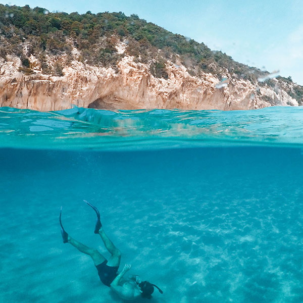
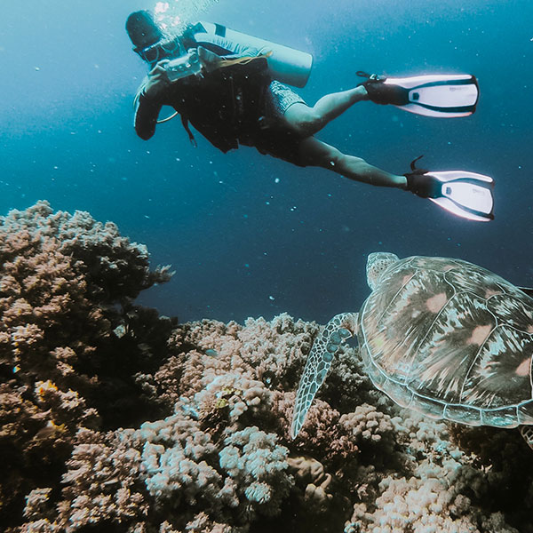
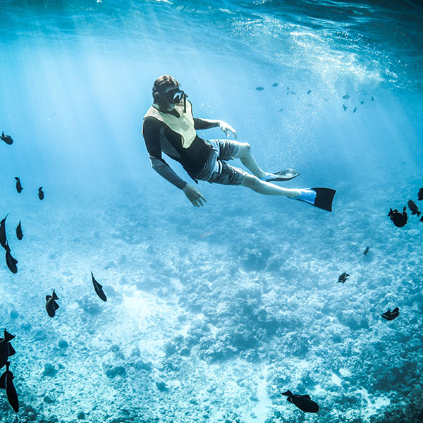

Des poissons aux mâchoires protubérantes et des raies pastenagues sillonnent Shark Ray Alley, un banc de sable où des requins-nourrices à l'air effrayant (mais dociles) vous feront peut-être trembler de la tête aux palmes. Ce célèbre spot de plongée près de Caye Caulker (Belize) fait partie de la réserve marine de Hol Chan. Une entaille dans le récif corallien y a créé un chenal de 10 m de profondeur (hol chin signifie « petit chenal » en maya). Les plongeurs s'y retrouvent nez à nez avec des murènes, des serrans noirs et divers coraux adaptés aux forts courants du chenal. Ils peuvent aussi explorer le célèbre Grand Trou Bleu. Shark Ray Alley et Hol Chan se trouvent à l'extrémité sud d'Ambergris Caye.


